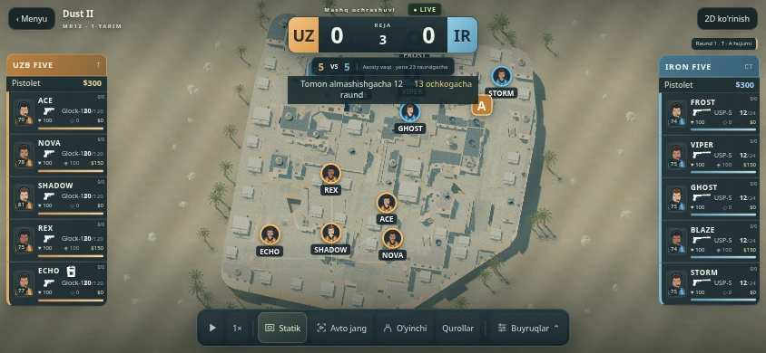

Xaritalar yanada jonli.
11 xaritada murakkab arxitektura, yangi teksturalar, past-baland atrof muhit va kunduzgi/tungi osmon. Statik, avtomatik jang va alohida o‘yinchi kameralari. Android’da xaritalar ilova ichida, webda bir marta saqlanadi.
Android8 yoki yangiroq. Eski ARENA ustiga o‘rnating — klub saqlanadi. Eski ilovani o‘chirmang. Ovoz boshlanishi uchun ekranga bir marta teging.

Yangi detallar va muhit
Jamoani rivojlantiring, strategiya tanlang, avtomatik yoki alohida jangchi kamerasidan kuzating. «Xaritalar» bo‘limida jang boshlamasdan xaritani ko‘ring.
APK ichida xaritalar, agentlar va ovozlar tayyor. Brauzer birinchi foydalanishda kerakli fayllarni yuklaydi va qurilmada saqlaydi. Audio ZIP tanlash shart emas.
Sozlamalarda qurol, C4 va granata ovozlarini alohida eshitib ko‘ring. MP5-SD, Zeus, pichoq, ayrim qo‘shimcha effektlar hamda jang va mag‘lubiyat musiqalari — ARENA yaratgan ovozlar; ular alohida belgilangan. Ancient Night’da tungi osmon va alohida yoritish bor.
APK 103 MB · SHA256: